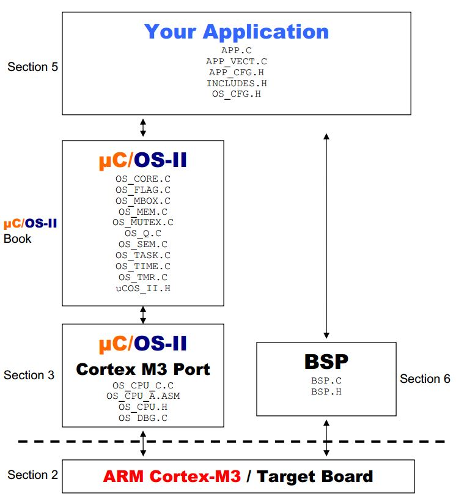

ucos-ii 基于Cortex-M3的移植概述
ucos-ii系统是一个可移植的实时操作系统。
ucos-ii文件结构分为两部分，Source和Ports，其中Source文件夹中为系统核心文件，Ports文件夹中主要是操作系统用到的与CPU相关的文件。
ucos-ii软件框架图如下所示

ucos-ii与移植相关的Ports文件夹中有四个文件
- os_cpu.h
- os_cpu_c.c
- os_cpu_a.asm
- os_dbg.c
os_cpu.h
数据类型声明
1 | /* |
- OS_STK
在Cortex-M3中堆栈的位宽为32位 - OS_CPU_SR
在Cortex-M3中CPU状态寄存器的大小也是32位
临界段的宏定义
临界段（Critical section）指的是处理时不可分割的代码。一旦这部分代码开始执行，则不允许任何中断打入，为确保临界段代码的执行不被中断，在进入临界段之前须关中断，在临界段执行完之后立即开中断。
1 | /* |
ucos-ii中临界段有三种实现方式：
- 方式1
通过使用简单的处理器指令禁止/使能中断实现，用关中断指令实现OS_ENTER_CRITICAL()，开中断指令实现OS_EXIT_CRITICAL()。存在问题：若某个函数内部存在临界段，若在调用该函数前已经关闭了中断，但调用该函数之后会打开中断，但当用户不希望调用完被开中断时，这种实现方式就存在问题，即无法满足临界段嵌套的情况。该种实现方法仅用于没有其他实现方式的一些特定的处理器或编译器。
- 方式2
通过先将CPU状态寄存器的值入栈，然后关中断，在离开临界段时，直接将CPU状态寄存器的值出栈。存在问题：当有处理器使用堆栈指针相对寻址模式时，即使用栈指针加减偏移量来传递参数，这种方式进入临界段将导致堆栈地址混乱，退出临界段时可能引发数据异常。
- 方式3
在关中断前，使用局部变量保存中断状态，然后关中断，在离开临界段时，直接恢复中断状态。该方式是最安全的实现方式，也是几乎所有实时操作系统选择的方式。
1
2注意，ucos-ii中第三中实现方式使用宏定义，且直接使用了cpu_sr变量，因此，在调用OS_ENTER_CRITICAL()函数前，也必须定义cpu_sr变量。
OS_CPU_SR_Save和OS_CPU_SR_Restore由汇编语言实现，实现代码在os_cpu_a.asm中。
栈生长方向
1 |
- 1 表示 栈生长方向由高地址向低地址生长，否则为低地址向高地址生长
任务切换函数
1 |
- 任务切换由汇编语言实现，实现代码在os_cpu_a.asm中。
函数原型声明
1 | /* |
- OS_CPU_SR_Save() - 保存CPU状态寄存器
- OS_CPU_SR_Restore() - 恢复CPU状态寄存器
- OSCtxSw() - 触发任务切换
- OSIntCtxSw() - 在中断中触发任务切换
- OSStartHighRdy() - 开始执行已就绪的最高优先级任务
- OS_CPU_PendSVHandler() - PendSV异常处理函数，在这里执行真正的任务切换过程
以上函数均使用汇编语言实现，实现代码在os_cpu_a.asm中。
- OS_CPU_SysTickHandler() - Systick中断处理函数
- OS_CPU_SysTickInit() - Systick初始化函数
- OS_CPU_SysTickClkFreq() - 获取Systick频率函数
这3个函数可以使用C语言实现，实现代码在os_cpu_c.c中。
os_cpu_a.asm
PRIMASK寄存器
PRIMASK寄存器为1位宽的中断屏蔽寄存器，默认值为0；在置位时，它会阻止 不可屏蔽中断NMI 和 HardFault异常 之外 的所有中断和异常。
修改PRIMASK寄存器的数值可以使用CPS(修改处理器状态指令)修改寄存器值
1
2CPSIE I ;清除PRIMASK（使能中断）
CPSID I ;置位PRIMASK（禁止中断）也可以使用MRS和MSR指令访问寄存器
MRS （Move to Register from State register），将状态寄存器的值移动到通用寄存器，状态寄存器为源地址，通用寄存器为目的地址，通常用于将状态寄存器的内容读取到通用寄存器中
MSR （Move to State register from Register），将通用寄存器的值移动到状态寄存器，通用寄存器为源地址，状态寄存器为目的地址，通常用于将通用寄存器的内容或一个立即数写入到状态寄存器中
记忆方法，MSR S,R; MRS R,S;
1
2
3
4
5
6
7MOVS R0, #1
MSR PRIMASK, R0 ;将1写入PRIMASK寄存器，禁止所有中断/异常
MOVS R0, #0
MSR PRIMASK, R0 ;将0写入PRIMASK寄存器，使能所有中断/异常
MRS R0, PRIMASK ;将PRIMASK寄存器的状态读取到R0寄存器
OS_CPU_SR_Save()函数实现
1 | OS_CPU_SR_Save |
OS_CPU_SR_Restore()函数实现
1 | OS_CPU_SR_Restore |
PendSV异常
- PendSV - 可挂起的系统服务请求，OS一般使用该异常进行上下文切换，优先级在系统异常中是较低的，高于Systick
- 使用PendSV实现上下文切换的原因
1
2由于Systick中断优先级高于一般中断优先级，而在Systick中断服务程序中需要检查是否有高优先级任务就绪，可能需要进行任务切换，那么如果Systick抢占了原有的一个中断服务程序，那么进行任务切换需要一定时间，原有中断服务程序会较晚完成，所以系统的实时性会受到影响，不符合实时操作系统的理念。
所以，Cortex-M3设计的PendSV就是用来进行任务切换，具体是将PendSV的优先级设置为最低255，在Systick中检查处理任务就绪状态，然后触发一个PendSV异常之后返回，等其他所有中断服务程序结束后，最后再执行PendSV异常服务程序，进行任务切换，即实现延迟切换。
OSStartHighRdy()函数实现
1 | ;******************************************************************************************************** |
Cortex-M3的异常有优先级之分，高优先级异常可以抢占低优先级异常
有些异常具有固定的优先级（复位、NMI、HardFault），优先级由负数表示
其他异常具有可编程的优先级，优先级为0~255
每个中断都有对应的中断优先级寄存器，PendSV异常的中断优先级寄存器地址为0xE000ED22，即NVIC_SYSPRI14的值
1
NVIC_SYSPRI14 0xE000ED22 ; System priority register (priority 14).
将PendSV优先级设为最低255，即NVIC_PENDSV_PRI的值
1
NVIC_PENDSV_PRI 0xFF ; PendSV priority value (lowest).
将PendSV的优先级设置为255，则使用STRB(字节数据写入命令)指令将0xFF写入PendSV优先级寄存器
1
2
3LDR R0, =NVIC_SYSPRI14 ; Set the PendSV exception priority
LDR R1, =NVIC_PENDSV_PRI
STRB R1, [R0] ;STRB将一个8位数据写入指定的内存单元，即将R1寄存器的低8位写入R1指向的内存单元中清空过程堆栈寄存器
1
2MOVS R0, #0 ; Set the PSP to 0 for initial context switch call
MSR PSP, R0
为什么要清除呢？
将OSRunning的值写为1，表示系统进入运行状态
1
2
3LDR R0, =OSRunning ; OSRunning = TRUE
MOVS R1, #1
STRB R1, [R0]然后触发PendSV异常
可以通过向中断控制寄存器写入值，设置中断的挂起状态，读值可以获取中断挂起状态
中断控制寄存器的地址为0xE000ED04，即NVIC_INT_CTRL
1
NVIC_INT_CTRL 0xE000ED04 ; Interrupt control state register.
其中PendSV为第28位，对中断控制寄存器的第28位写1即可挂起PendSV系统调用，即NVIC_PENDSVSET
1
NVIC_PENDSVSET 0x10000000 ; Value to trigger PendSV exception.
使用STR(字数据写入命令)指令将第28位为1的值写入中断控制寄存器
1
2
3LDR R0, =NVIC_INT_CTRL ; Trigger the PendSV exception (causes context switch)
LDR R1, =NVIC_PENDSVSET
STR R1, [R0]最后在处理器级别使能中断
1
CPSIE I ; Enable interrupts at processor level
为什么要使能中断，是因为怕之前有禁止中断，现在系统运行起来了要打开吗？
- 最后进入死循环
1
2OSStartHang
B OSStartHang ; Should never get here
由于已经触发了PendSV中断且使能，所以应该会立即进入PendSV异常处理程序，接下来会不断的在各个任务间切换，所以再也不会进入最后一个死循环
OSCtxSw() 和 OSIntCtxSw() 函数实现
- OSCtxSw()函数触发任务切换，OSIntCtxSw()在中断中触发任务切换
- 由于真正的任务切换是在PendSV异常处理程序中完成的，触发任务切换仅仅触发PendSV异常即可
1
2
3
4
5
6
7
8
9
10
11
12
13
14
15
16
17
18
19
20
21
22
23
24
25
26
27
28;********************************************************************************************************
; PERFORM A CONTEXT SWITCH (From task level)
; void OSCtxSw(void)
;
; Note(s) : 1) OSCtxSw() is called when OS wants to perform a task context switch. This function
; triggers the PendSV exception which is where the real work is done.
;********************************************************************************************************
OSCtxSw
LDR R0, =NVIC_INT_CTRL ; Trigger the PendSV exception (causes context switch)
LDR R1, =NVIC_PENDSVSET
STR R1, [R0]
BX LR
;********************************************************************************************************
; PERFORM A CONTEXT SWITCH (From interrupt level)
; void OSIntCtxSw(void)
;
; Notes: 1) OSIntCtxSw() is called by OSIntExit() when it determines a context switch is needed as
; the result of an interrupt. This function simply triggers a PendSV exception which will
; be handled when there are no more interrupts active and interrupts are enabled.
;********************************************************************************************************
OSIntCtxSw
LDR R0, =NVIC_INT_CTRL ; Trigger the PendSV exception (causes context switch)
LDR R1, =NVIC_PENDSVSET
STR R1, [R0]
BX LR
OS_CPU_PendSVHandler() 函数实现
OS_CPU_PendSVHandler()为PendSV的异常处理函数，在这里实现了真正的任务切换
首先在任务切换时需要禁止系统中断，防止出现异常
1
CPSID I ; Prevent interruption during context switch
取出任务堆栈寄存器中的值，任务堆栈寄存器里的值为任务堆栈栈顶地址，检查值是否为0，由于之前在OSStartHighRdy()中对任务堆栈指针PSP进行了清0，所以当PSP为0时，表示为第一次发生任务切换；当不为0时，表示不是第一次发生任务切换
由于任务切换需要将任务的运行环境入栈保存，所以当第一次切换时，不需要进行保存，直接跳过环境参数入栈过程
1
2MRS R0, PSP ; PSP is process stack pointer
CBZ R0, OS_CPU_PendSVHandler_nosave ; Skip register save the first time若不是第一次切换，则需要保存环境参数
使用SUBS将任务堆栈地址减去32个字节，即扩大留出8个字的空间，然后使用STM(批量内存字数据写入命令)将R4~R11的值依次保存到任务堆栈刚刚留出的8个字的空间中
1
2SUBS R0, R0, #0x20 ; Save remaining regs r4-11 on process stack
STM R0, {R4-R11}使用LDR(字读取指令)，读取当前任务控制块地址(也是任务栈顶指针的地址)到R1中
然后再把任务堆栈栈顶指针变量的地址值读取到R1中，即栈顶指针地址
最后使用(字数据写入命令)把刚刚保存完R4~R11参数的栈顶地址保存到栈顶指针变量的地址中去，完成了当前任务环境入栈
1
2
3LDR R1, =OSTCBCur ; OSTCBCur->OSTCBStkPtr = SP;
LDR R1, [R1]
STR R0, [R1] ; R0 is SP of process being switched outOS_CPU_PendSVHandler_nosave 实现了将CPU执行流切换到最高就绪优先级任务的执行
将R14的值，即子任务返回地址入栈
跳转到任务切换函数的钩子函数执行
返回后R14的值出栈，即实现了钩子函数的执行
1
2
3
4
5OS_CPU_PendSVHandler_nosave
PUSH {R14} ; Save LR exc_return value
LDR R0, =OSTaskSwHook ; OSTaskSwHook();
BLX R0
POP {R14}将最高就绪优先级任务的优先级存入到当前运行任务的优先级变量中，即OSPrioCur = OSPrioHighRdy;
1
2
3
4LDR R0, =OSPrioCur ; OSPrioCur = OSPrioHighRdy;
LDR R1, =OSPrioHighRdy
LDRB R2, [R1]
STRB R2, [R0]将最高就绪优先级任务的任务控制块TCB地址保存到当前运行任务控制块指针变量内，即OSTCBCur = OSTCBHighRdy;
1
2
3
4LDR R0, =OSTCBCur ; OSTCBCur = OSTCBHighRdy;
LDR R1, =OSTCBHighRdy
LDR R2, [R1]
STR R2, [R0]取出当前运行任务控制块的地址，恢复任务堆栈中R4~R11的值到寄存器中
将任务控制块的栈顶指针地址退回8个字
最后将任务控制块的栈顶指针值赋值给任务堆栈指针PSP，即加载新的任务堆栈到PSP中
1
2
3
4LDR R0, [R2] ; R0 is new process SP; SP = OSTCBHighRdy->OSTCBStkPtr;
LDM R0, {R4-R11} ; Restore r4-11 from new process stack
ADDS R0, R0, #0x20
MSR PSP, R0 ; Load PSP with new process SP使用逻辑或操作将LR寄存器的位2强制设置为1，目的是返回线程栈PSP
在处理器进入异常处理程序时，LR的值会被更新为EXC_RETURN，EXC_RETURN位2的值，1表示返回线程栈PSP，0表示返回主栈MSP
1
ORR LR, LR, #0x04 ; Ensure exception return uses process stack
然后打开中断，跳转到返回地址
1
2
3
4CPSIE I
BX LR ; Exception return will restore remaining context
END
os_cpu_c.c
OS_CPU_SysTickInit()函数
- 此函数的作用是初始化系统时钟，即根据OS_TICKS_PER_SEC的值，初始化系统Systick的频率
OS_CPU_SysTickHandler()函数
- 此函数的是Systick的中断服务程序，ucos在中断服务程序中进行任务切换检测
1
2
3
4
5
6
7
8
9
10
11
12
13void OS_CPU_SysTickHandler (void)
{
OS_CPU_SR cpu_sr;
OS_ENTER_CRITICAL(); /* Tell uC/OS-II that we are starting an ISR */
OSIntNesting++;
OS_EXIT_CRITICAL();
OSTimeTick(); /* Call uC/OS-II's OSTimeTick() */
OSIntExit(); /* Tell uC/OS-II that we are leaving the ISR */
}
OSTaskStkInit()函数
- 该函数的作用是对任务的堆栈进行初始化
1 | OS_STK *OSTaskStkInit (void (*task)(void *p_arg), void *p_arg, OS_STK *ptos, INT16U opt) |
- Cortex-M3的R13寄存器为栈指针寄存器(SP)，可以通过PUSH和POP操作实现栈存储的访问，物理上存在两个栈指针：
- MSP：主栈指针，SP_main（默认栈指针）
- PSP：进程栈指针，SP_process
- 当系统复位后或处理器处于处理模式时，使用MSP
- 当处于线程模式时，使用PSP
- 栈指针的选择由 特殊寄存器CONTROL 决定
- 一般在用到嵌入式OS时才用到PSP，并且OS内核和应用任务的栈是相互分离的
- PSP的初始值未定义，MSP的初始值为复位流程中从存储器的第一个字节中取出
- CONTROL寄存器
- 栈指针的选择
- 线程模式的访问等级
- M4中表示当前上下文是否使用浮点单元